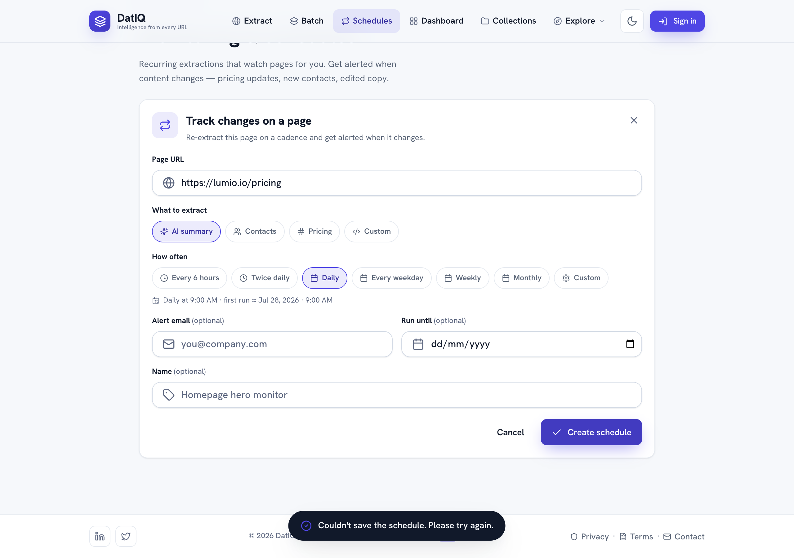

Scheduling & change monitoring
Scheduling lets DatIQ re-check a page on a recurring cadence and alert you when it changes — perfect
Scheduling lets DatIQ re-check a page on a recurring cadence and alert you when it changes — perfect for watching a competitor's pricing, a careers page, or any page that matters.

Scheduling needs an account. Recurring runs happen on DatIQ's servers, not in your browser — so a
schedule has to be saved to your account before anything can run it. If you create one while signed out,
DatIQ holds onto it and prompts you to sign in, then saves it for you automatically the moment you do.
Any schedule that could not be saved is clearly labelled "Not running — sign in to start this schedule"
rather than showing you a next-run time it can't honour.
Two ways to create a schedule:
- From Home — pick a preset cadence (e.g. Daily) in the composer's Schedule menu, then Extract. This arms a recurring job for that URL (or batch).
- From the Schedules screen — click New schedule for the full editor.
In the schedule editor you set:
- The URL to watch and the intent (what to extract each time).
- A cadence — presets (Every 6 hours, Twice daily, Daily, Every weekday, Weekly, Monthly) or a custom builder (frequency · day · time).
- An optional "run until" end date.
- An optional alert email to notify when the page changes.
- A name so you can recognise it later.
On the Schedules list, each schedule shows its cadence, when it last ran, and when it runs next. For each one you can:
- Run now — check the page immediately and see whether it changed.
- Edit, Pause / Resume, or Delete.
- Expand it to see all its settings.
When an automated run detects a change, DatIQ records it and — if you set an alert email — sends you a notification.
If your plan lapses, scheduled runs pause automatically and resume on their own when you renew — you do not have to re-create or re-arm them. A schedule you paused yourself stays paused either way. See Plans, usage & billing.